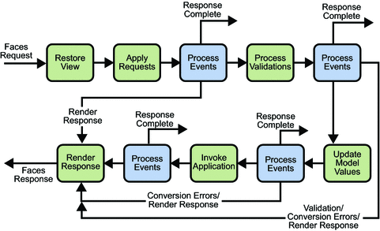

The Life Cycle of a JavaServer Faces Page
The life cycle of a JavaServer Faces page is somewhat similar to that of a JSP page: The client makes an HTTP request for the page, and the server responds with the page translated to HTML. However, the JavaServer Faces life cycle differs from the JSP life cycle in that it is split up into multiple phases in order to support the sophisticated UI component model. This model requires that component data be converted and validated, component events be handled, and component data be propagated to beans in an orderly fashion.
A JavaServer Faces page is also different from a JSP page in that it is represented by a tree of UI components, called a view. During the life cycle, the JavaServer Faces implementation must build the view while considering state saved from a previous submission of the page. When the client submits a page, the JavaServer Faces implementation performs several tasks, such as validating the data input of components in the view and converting input data to types specified on the server side.
The JavaServer Faces implementation performs all these tasks as a series of steps in the JavaServer Faces request-response life cycle. Figure 10-3 illustrates these steps.
Figure 10-3 JavaServer Faces Standard Request-Response Life Cycle
The life cycle handles both kinds of requests: initial requests and postbacks. When a user makes an initial request for a page, he or she is requesting the page for the first time. When a user executes a postback, he or she submits the form contained on a page that was previously loaded into the browser as a result of executing an initial request. When the life cycle handles an initial request, it only executes the restore view and render response phases because there is no user input or actions to process. Conversely, when the life cycle handles a postback, it executes all of the phases.
Usually, the first request for a JavaServer Faces pages comes in as a result of clicking a hyperlink on an HTML page that links to the JavaServer Faces page. To render a response that is another JavaServer Faces page, the application creates a new view and stores it in the FacesContext instance, which represents all of the contextual information associated with processing an incoming request and creating a response. The application then acquires object references needed by the view and calls FacesContext.renderResponse, which forces immediate rendering of the view by skipping to the Render Response Phase of the life cycle, as is shown by the arrows labelled Render Response in the diagram.
Sometimes, an application might need to redirect to a different web application resource, such as a web service, or generate a response that does not contain JavaServer Faces components. In these situations, the developer must skip the rendering phase (Render Response Phase) by calling FacesContext.responseComplete. This situation is also shown in the diagram, this time with the arrows labelled Response Complete.
The most common situation is that a JavaServer Faces component submits a request for another JavaServer Faces page. In this case, the JavaServer Faces implementation handles the request and automatically goes through the phases in the life cycle to perform any necessary conversions, validations, and model updates, and to generate the response.
This rest of this section explains each of the life cycle phases using the guessNumber example.
The details of the life cycle explained in this section are primarily intended for developers who need to know information such as when validations, conversions, and events are usually handled and what they can do to change how and when they are handled. Page authors don’t necessarily need to know the details of the life cycle.
Restore View Phase
When a request for a JavaServer Faces page is made, such as when a link or a button is clicked, the JavaServer Faces implementation begins the restore view phase.
During this phase, the JavaServer Faces implementation builds the view of the page, wires event handlers and validators to components in the view, and saves the view in the FacesContext instance, which contains all the information needed to process a single request. All the application’s component tags, event handlers, converters, and validators have access to the FacesContext instance.
If the request for the page is an initial request, the JavaServer Faces implementation creates an empty view during this phase and the life cycle advances to the render response phase, during which the empty view is populated with the components referenced by the tags in the page.
If the request for the page is a postback, a view corresponding to this page already exists. During this phase, the JavaServer Faces implementation restores the view by using the state information saved on the client or the server.
The view for the greeting.jsp page of the guessNumber example would have the UIView component at the root of the tree, with helloForm as its child and the rest of the JavaServer Faces UI components as children of helloForm.
Apply Request Values Phase
After the component tree is restored, each component in the tree extracts its new value from the request parameters by using its decode method. The value is then stored locally on the component. If the conversion of the value fails, an error message associated with the component is generated and queued on FacesContext. This message will be displayed during the render response phase, along with any validation errors resulting from the process validations phase.
In the case of the userNo component on the greeting.jsp page, the value is whatever the user entered in the field. Because the object property bound to the component has an Integer type, the JavaServer Faces implementation converts the value from a String to an Integer.
If any decode methods or event listeners called renderResponse on the current FacesContext instance, the JavaServer Faces implementation skips to the render response phase.
If events have been queued during this phase, the JavaServer Faces implementation broadcasts the events to interested listeners.
If some components on the page have their immediate attributes (see The immediate Attribute) set to true, then the validation, conversion, and events associated with these components will be processed during this phase.
At this point, if the application needs to redirect to a different web application resource or generate a response that does not contain any JavaServer Faces components, it can call FacesContext.responseComplete.
At the end of this phase, the components are set to their new values, and messages and events have been queued.
Process Validations Phase
During this phase, the JavaServer Faces implementation processes all validators registered on the components in the tree. It examines the component attributes that specify the rules for the validation and compares these rules to the local value stored for the component.
If the local value is invalid, the JavaServer Faces implementation adds an error message to the FacesContext instance, and the life cycle advances directly to the render response phase so that the page is rendered again with the error messages displayed. If there were conversion errors from the apply request values phase, the messages for these errors are also displayed.
If any validate methods or event listeners called renderResponse on the current FacesContext, the JavaServer Faces implementation skips to the render response phase.
At this point, if the application needs to redirect to a different web application resource or generate a response that does not contain any JavaServer Faces components, it can call FacesContext.responseComplete.
If events have been queued during this phase, the JavaServer Faces implementation broadcasts them to interested listeners.
In the case of the greeting.jsp page, the JavaServer Faces implementation processes the standard validator registered on the userNo inputText tag. It verifies that the data the user entered in the text field is an integer in the range 0 to 10. If the data is invalid or if conversion errors occurred during the apply request values phase, processing jumps to the render response phase, during which the greeting.jsp page is rendered again, with the validation and conversion error messages displayed in the component associated with the message tag.
Update Model Values Phase
After the JavaServer Faces implementation determines that the data is valid, it can walk the component tree and set the corresponding server-side object properties to the components’ local values. The JavaServer Faces implementation will update only the bean properties pointed at by an input component’s value attribute. If the local data cannot be converted to the types specified by the bean properties, the life cycle advances directly to the render response phase so that the page is re-rendered with errors displayed. This is similar to what happens with validation errors.
If any updateModels methods or any listeners called renderResponse on the current FacesContext instance, the JavaServer Faces implementation skips to the render response phase.
At this point, if the application needs to redirect to a different web application resource or generate a response that does not contain any JavaServer Faces components, it can call FacesContext.responseComplete.
If events have been queued during this phase, the JavaServer Faces implementation broadcasts them to interested listeners.
At this stage, the userNo property of the UserNumberBean is set to the local value of the userNumber component.
Invoke Application Phase
During this phase, the JavaServer Faces implementation handles any application-level events, such as submitting a form or linking to another page.
At this point, if the application needs to redirect to a different web application resource or generate a response that does not contain any JavaServer Faces components, it can call FacesContext.responseComplete.
If the view being processed was reconstructed from state information from a previous request and if a component has fired an event, these events are broadcast to interested listeners.
The greeting.jsp page from the guessNumber example has one application-level event associated with the UICommand component. When processing this event, a default ActionListener implementation retrieves the outcome, success, from the component’s action attribute. The listener passes the outcome to the default NavigationHandler. The NavigationHandler matches the outcome to the proper navigation rule defined in the application’s application configuration resource file to determine which page needs to be displayed next. See Configuring Navigation Rules for more information on managing page navigation. The JavaServer Faces implementation then sets the response view to that of the new page. Finally, the JavaServer Faces implementation transfers control to the render response phase.
Render Response Phase
During this phase, the JavaServer Faces implementation delegates authority for rendering the page to the JSP container if the application is using JSP pages. If this is an initial request, the components represented on the page will be added to the component tree as the JSP container executes the page. If this is not an initial request, the components are already added to the tree so they needn’t be added again. In either case, the components will render themselves as the JSP container traverses the tags in the page.
If the request is a postback and errors were encountered during the apply request values phase, process validations phase, or update model values phase, the original page is rendered during this phase. If the pages contain message or messages tags, any queued error messages are displayed on the page.
After the content of the view is rendered, the state of the response is saved so that subsequent requests can access it and it is available to the restore view phase.
In the case of the guessNumber example, if a request for the greeting.jsp page is an initial request, an empty view representing this page is built and saved in FacesContext during the restore view phase. During this phase, the empty view is populated with the components referenced in the page and then rendered during this phase. If a request for the page is a postback (such as when the user enters some invalid data and clicks Submit), the tree is rebuilt during the restore view phase and continues through the request processing life cycle phases.